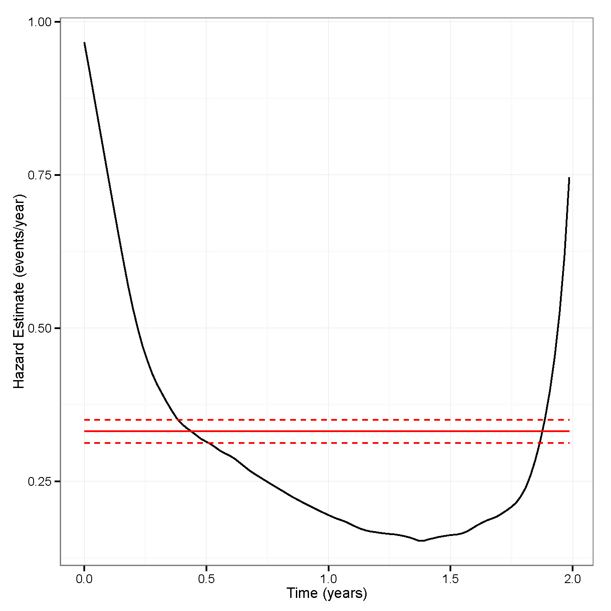
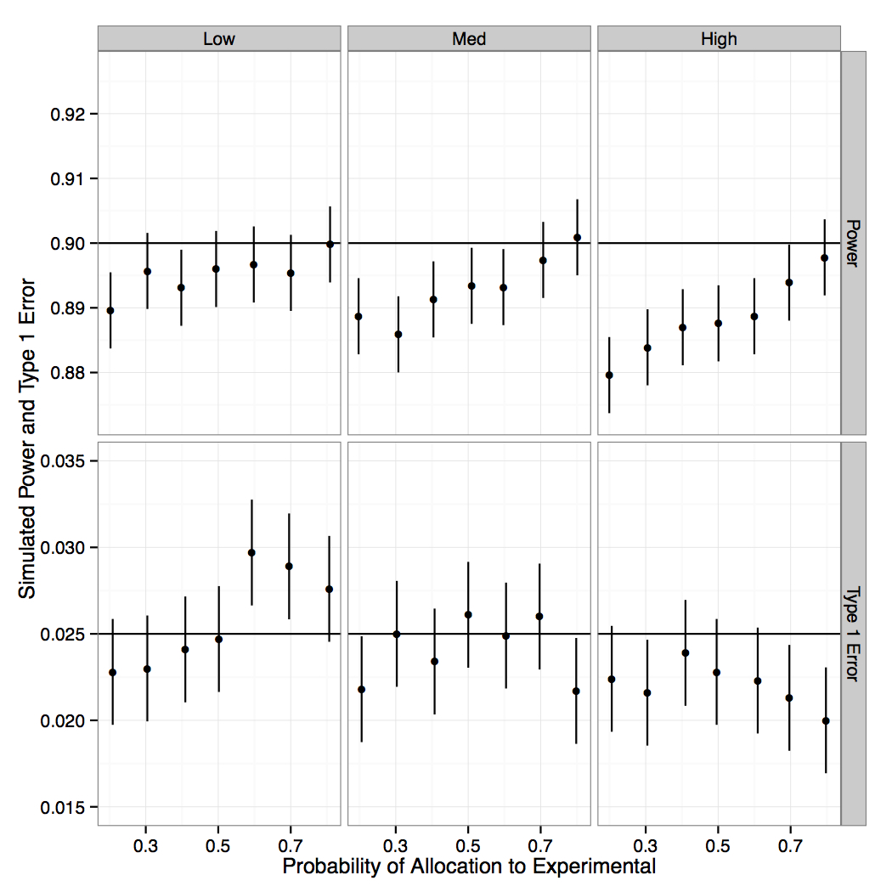

class: center, middle, gray # Sample Size Under the Additive Hazards Model #### Lee S. McDaniel, Menggang Yu, Rick Chappell #### University of Wisconsin, Madison ??? * Thank you for having me * Talking about clinical trials, esp. Non-inf * Exploring sample size calculations when outcome is time to event * Accomplished from additive hazards perspective --- class: gray # Motivation - SPORTIF III * Non-inferiority trial with margin as <b>hazard difference</b> <br><br> * Warfarin vs. ximelagatran <br><br> * Exponential distribution assumed <br> <br> * Low primary event rate (stroke, systemic embolic event, death), about 3% per year ### What if endpoint had included bleeding? * 35% event rate per year <br><br> * Cannot appeal to exponentiality <br><br> * (At least not if hazard rate is non-constant) ??? About Warfarin/downsides - Warfarin used to prevent stroke after atrial fibrillation - Invented in WI, because of dead cows - Warfarin requires dose adjustment, ximelegatran would not - Avoid spinach on Warfarin About bleeding - Bleeding is very common - Minor bleeding may be giant bruises on arms - Drug taken for decades ximelegatran was abandoned due to liver toxicity --- class: image # Estimated Hazard <center></center> ??? - Decreasing hazard function, definitely not constant. - Estimated using muhaz package - Kernel smoothing of Nelson-Aalen estimates --- class: image # Consequences of Analysis <center><img width="550px" src="SCT/Figs/errorsim.jpg" /></center> ??? - Only way to calculate sample size in a NI trial with additive margin is w/ parametric assumptions - Analyzing using exponential assumption can cause major problems - Reduced power, inflated type 1 error - Both are unacceptable - Shape parameter < 1 -> decreasing hazard - Shape > 1 -> increasing hazard --- class: gray, big # Selection of Hypotheses Two candidates for time to event hypotheses $$\begin{aligned} & H\_0 : \lambda\_B(t) - \lambda\_A(t) \geq \delta \\\ & H\_1 : \lambda\_B(t) - \lambda\_A(t) < \delta \\\ & \quad \qquad\mbox{ or} \\\ & H\_0 : \lambda\_B(t) /\lambda\_A(t) \geq \delta \\\ & H\_1 : \lambda\_B(t) / \lambda\_A(t) < \delta \end{aligned} $$ <center><b>We want to design clinical trials based on a hazard difference without distributions.</b></center> ??? - Some clinicians prefer difference - Need to address what clinicians actually want - Not what is convenient - Hypotheses need to be true for all t - If hazards cross, what would that mean? --- class: gray, big # Additive Hazards Aalen's original model $$ \lambda\_i(t) = \lambda\_0(t) + \gamma(t)' \mathbf{Z}\_i (t) $$ Lin and Ying model $$ \lambda\_i(t) = \lambda\_0(t) + \gamma' \mathbf{Z}\_i (t) $$ Treatment indicator: $Z_i = 1$ $$ \lambda_i (t) = \lambda\_0(t) + \gamma Z\_i $$ So model reduces to $$ \lambda\_B(t) - \lambda\_A(t) = \gamma $$ ??? - First we require the same effect size over time - It may be useful to relax this - Some treatments only kick in after months - Remove possibility of switching treatment status - lambda_A is hazard for control group --- class: center, middle, gray, big # Superiority Trials --- class: gray, big # Superiority - Setup <b>Events are bad.</b> We want to test $$ \begin{aligned} H\_0 : \lambda\_B(t) - \lambda\_A(t) = 0 \\\ H\_1 : \lambda\_B(t) - \lambda\_A(t) \\neq 0 \end{aligned} $$ Further define <div style="position:relative; left:50px"> * $T$ = failure time * $C$ = censoring time * $X = \min(T,C)$ </div> ??? - Probably could actually be one-sided test, but that's not standard --- class: gray # Superiority Assumptions <div style="position:relative; left:50px"> * Subjects are independent <br><br> * $\lambda\_B (t) = \lambda\_A(t) + \gamma$ <br><br> * Assignment to $B$ completely random w.p. <i>p</i> <br><br> * Independent censoring <br><br> * Censoring distribution common (surv. function = $G(t)$) <br><br> * Local alternative: $$ \lambda\_B^{(n)} (t) = \lambda\_A(t) + \gamma^{(n)} $$ $$ \sqrt{n} \gamma^{(n)} \rightarrow \phi $$ </div> --- # Superiority Sample Size <!-- <div class="math" style="position:relative; top:200px"> <i>n</i> = <div class="fraction-inline"> <span class="numerator">(<i>z</i><sub>α</sub> + <i>z</i><sub>β</sub>)<sup>2</sup><i>d</i></span> <span class="divider">_________</span> <span class="denominator"><i>p</i>(1 – <i>p</i>)γ<sup>2</sup>E(<i>X</i>)<sup>2</sup></span> </div> </div> --> <div style="position:relative; top:150px"> $$ n = \frac{(z\_\alpha + z\_\beta)^2 d}{p(1-p)\gamma^2 E(X)^2}$$ </div> ??? - Minimized at p=1/2 - z's are normal quantiles --- class: center, middle, gray, big # Non-Inferiority Trials --- class: gray, big # Non-inferiority Setup Test: $$ \begin{aligned} H\_0 : \lambda\_B(t) - \lambda\_A(t) \geq \delta \\\ H\_1 : \lambda\_B(t) - \lambda\_A(t) < \delta \end{aligned} $$ Same assumptions as superiority <center><b>Alternative is equivalence (not local)</b></center> --- class: gray # NI Sample Size <!-- <div class="math" style="position:relative; top:200px"> <i>n</i> = <div class="fraction-inline"> <span class="numerator"> <i>z</i><sub>β</sub><sup>2</sup><i>d</i> + <i>z</i><sub>α</sub><sup>2</sup>(<i>d</i> + δE(<i>X</i>)(1 – 2<i>p</i>)) + 2<i>z</i><sub>α</sub><i>z</i><sub>β</sub><span class="radic2">√</span><span class="root"><i>d</i></span> <span class="radic2">√</span><span class="root"><i>d</i> + δE(<i>X</i>)(1 – 2<i>p</i>)</span> </span> <span class="divider">_________</span> <span class="denominator"><i>p</i>(1 – <i>p</i>)δ<sup>2</sup>E(<i>X</i>)<sup>2</sup></span> </div> </div> --> <div style="position:relative; top:125px"> $$n = \frac{z\_\beta^2 d + z\_\alpha^2 \\left\\{ d + \delta E(X) (1-2p) \\right\\} + 2z\_\alpha z\_\beta \\sqrt{d} \\sqrt{d + \delta E(X)(1-2p)}}{p(1-p)\delta^2 E(X)^2}$$ </div> --- class: gray, big # Equal Allocation <!-- <div class="math" style="position:relative; top:200px"> <i>n</i> = <div class="fraction-inline"> <span class="numerator">(<i>z</i><sub>α</sub> + <i>z</i><sub>β</sub>)<sup>2</sup><i>d</i></span> <span class="divider">_________</span> <span class="denominator"><i>p</i>(1 – <i>p</i>)γ<sup>2</sup>E(<i>X</i>)<sup>2</sup></span> </div> </div> --> <div style="position:relative; top:125px"> $$ n = \frac{(z\_\alpha + z\_\beta)^2 d}{p(1-p)\delta^2 E(X)^2}$$ </div> --- class: image # Simulations <center></center> --- class: gray, big # Comparison to Logrank <div style="position:relative; top:120px"> $$ n = \frac{(z\_\alpha + z\_\beta)^2 d}{p(1-p)\gamma^2 E(X)^2} \quad \mbox{vs.} \quad n = \frac{(z\_\alpha + z\_\beta)^2 }{p(1-p)d\log\Delta^2} $$ </div> ??? - d leads to higher sample size in add, lower in logrank - logrank doesn't depend on E(X) - prob of events is in numerator - analogous to case of difference v. ratio of proportions - longer followup time, lower sample size --- <center> <iframe style="width:750px; height:600px" src="samplesize.html" frameborder="0"></iframe> </center> --- class: center, middle, gray, big ### Thank you!